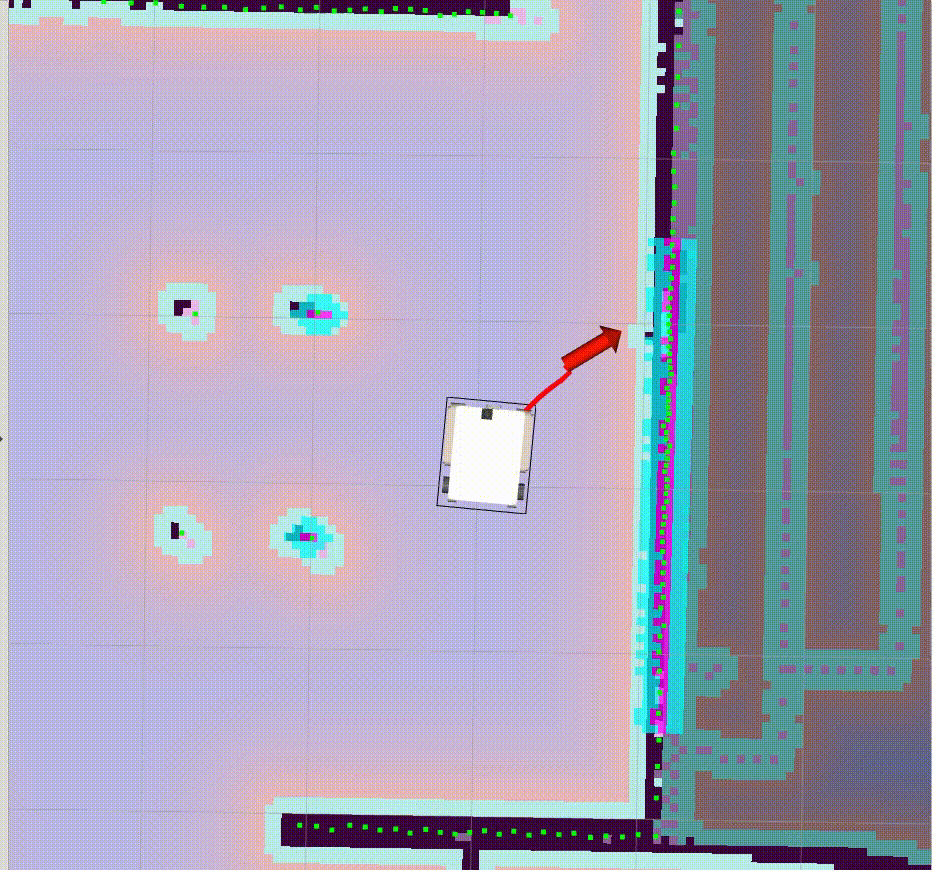
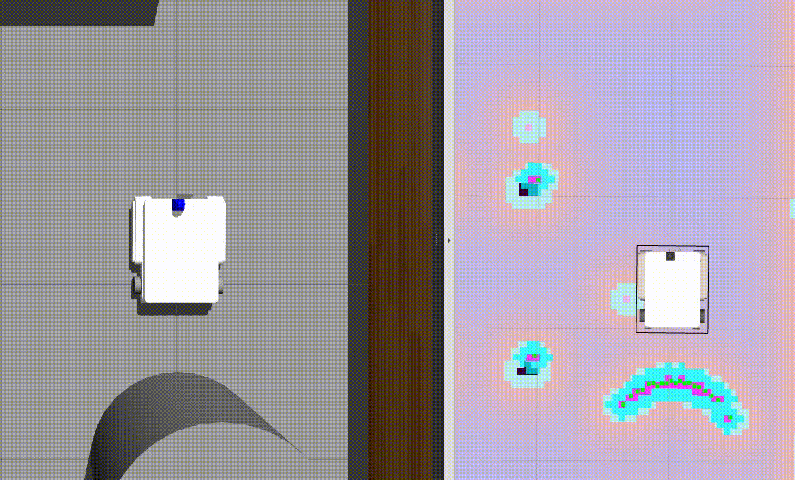

Recovery
dans move_base_flex_recovery.yaml nous ajoutons les plugins que l'on shoaie utiliser
planners:
- name: navfn/NavfnROS
type: navfn/NavfnROS
- name: global_planner/GlobalPlanner
type: global_planner/GlobalPlanner
controllers:
- name: dwa_local_planner/DWAPlannerROS
type: dwa_local_planner/DWAPlannerROS
#- name: eband_local_planner/EBandPlannerROS
# type: eband_local_planner/EBandPlannerROS
# - name: teb_local_planner/TebLocalPlannerROS
# type: teb_local_planner/TebLocalPlannerROS
recovery_behaviors:
- name: 'rotate_recovery/RotateRecovery'
type: 'rotate_recovery/RotateRecovery'
- name: clear_costmap_recovery
type: clear_costmap_recovery/ClearCostmapRecovery
- name: 'moveback_recovery'
type: 'moveback_recovery/MoveBackRecovery'
moveback_recovery:
linear_vel_back: -0.4 # default -0.3
step_back_length: 0.3 # default 1.0
step_back_timeout: 5.0 # default 15.0
controller_frequency: 5.0
controller_patience: 10.0
controller_max_retries: 10
planner_frequency: 1
planner_patience: 10.0
planner_max_retries: 10
recovery_enabled: true
recovery_patience: 15.0
oscillation_timeout: 10.0
oscillation_distance: 0.2
Rotate Recovery
Le plugin rotate_recovery/RotateRecovery est un plugin custum -> Créer son propre plugin
qui met en roation le robot et s'arreter lorsqu'il est aligné avec la trajectoire

Lors d'une rotation le robot s'arrette si il detecte un obstacle et revoi le code 159 [CANT_TURN]

Move Back Recovery
Ce Recovery fait reculer le robot a une distance et avec une vitesse definit

Le robot s'arrette si il detecte un obstacle et revoi le code 150 [FAILURE]
